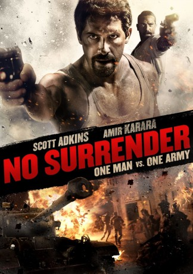

gesehen am 26.10.2019
gesehen am 26.10.2019Alternativ: No Surrender (Englischer Titel) gesehen am 26.10.2019
 
 IMDB-Wertung: 5.8 / 10
IMDB-Wertung: 5.8 / 10  Metascore:
Metascore: 
Ägypten während des Zweiten Weltkrieges. Als britische Soldaten eine junge Frau auf offener Straße angreifen und vergewaltigen wollen, hat General Yousef el-Masri (Amir Karara) genug. Der ehrliche Polizist steckt einen der Angreifer ins Gefängnis. Doch der ist der Neffe des britischen Militär-Gouverneurs von Alexandria und dieser verlangt umgehend die Freilassung seines Verwandten. Als sich el-Masri weigert, rückt das britische Militär auf das Polizeirevier vor und greift an. Die Polizisten müssen ihr Gefängnis verteidigen, denn für sie ist klar: Sie werden nicht aufgeben – auch wenn sie sich dafür unter anderem mit den übrigen Gefängnisinsassen (unter anderem Scott Adkins) verbünden müssen …
Jahr: 2018
Dauer: 115 Minuten
FSK: 18
Land: Ägypten Studio: Koch MediaTonspuren: DTS - ,
Untertitel: Deutsch,
Auflösung: 1080p (1920x808) Größe: 7362 MB
Genre: Action, Thriller, Krieg, Krimi, Geschichte
Regisseur: Peter Mimi
Drehbuch: Mohamed ElSobky, Peter Mimi
Soundtrack: Khaled Dagher
Darsteller:
 Scott Adkins als The Crazy One
Scott Adkins als The Crazy OneDatei: X:\NEU\No Surrender - One Man vs. One Army (2018, FSK18, 1920x808).mkv seit 26.10.2019
 Es gibt insgesamt 187 Filme in der Gruppe 'NEU'
Es gibt insgesamt 187 Filme in der Gruppe 'NEU'